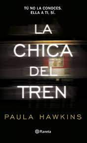

Sinopsis

Rachel Watson (Emily Blunt), que es alcohólica, se separa de su esposo Tom Watson (Justin Theroux) cuando se entera que sale con Anna Boyd (Rebecca Ferguson). Después del divorcio se siente sola y deprimida. Ahora comparte departamento con una amiga. No tiene trabajo y pasa sus días a bordo de un tren. En sus viajes, imagina a una pareja perfecta representada por los vecinos de Tom, su exesposo, la de Scott (Luke Evans) y Megan Hipwell (Haley Bennett).
Sobre el Autor
Paula Hawkins trabajó como periodista más de quince años antes de pasarse a la ficción. Nacida y criada en Zimbabue, se mudó a Londres en 1989 y vive allí desde entonces. Su nombre dio la vuelta al mundo cuando publicó La chica del tren y se consolidó después con Escrito en el agua. Durante años sus libros han estado en las listas de los libros más vendidos de todo el mundo, con más de 27 millones de ejemplares vendidos en más de 50 países. Paula Hawkins se ha convertido en uno de los mayores fenómenos editoriales de la última década.